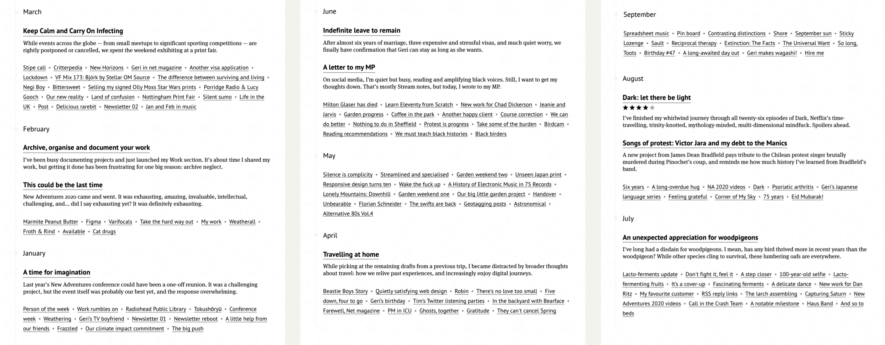
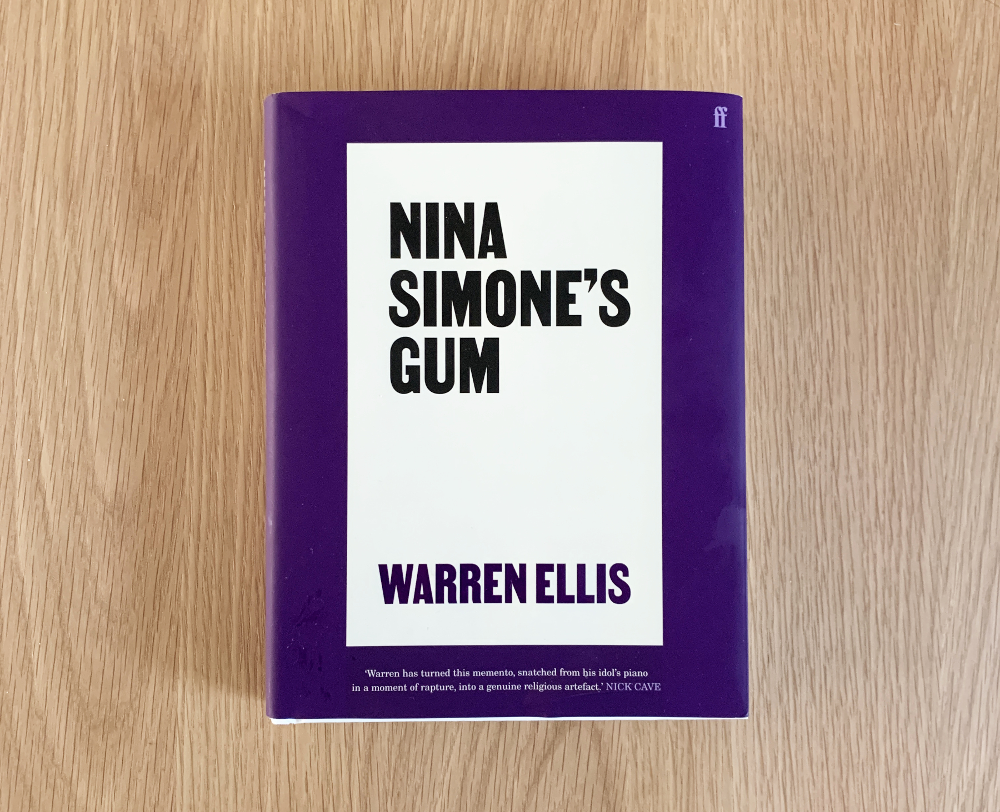
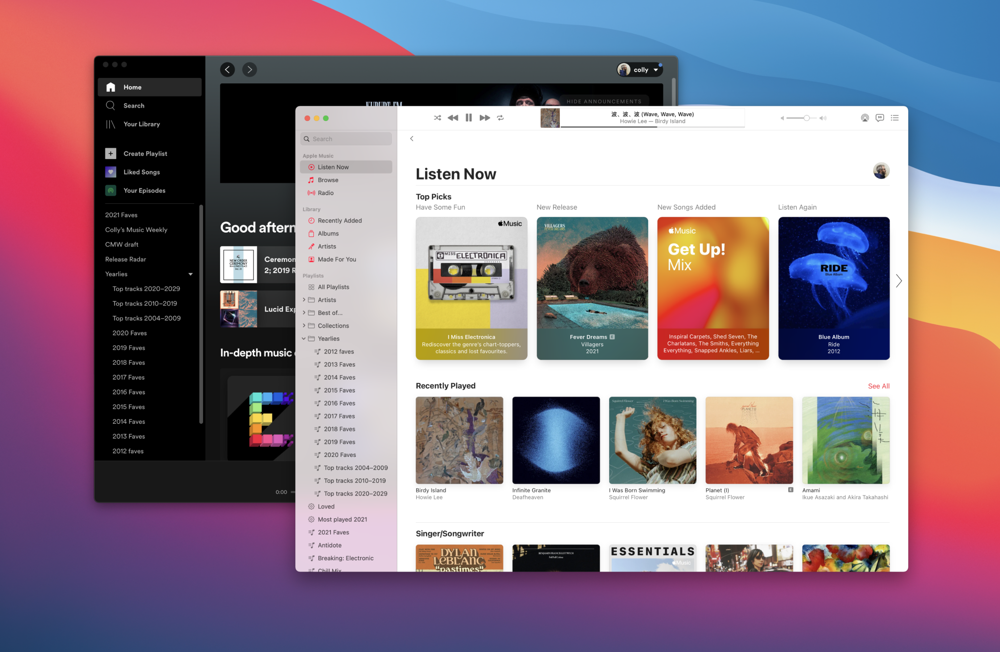
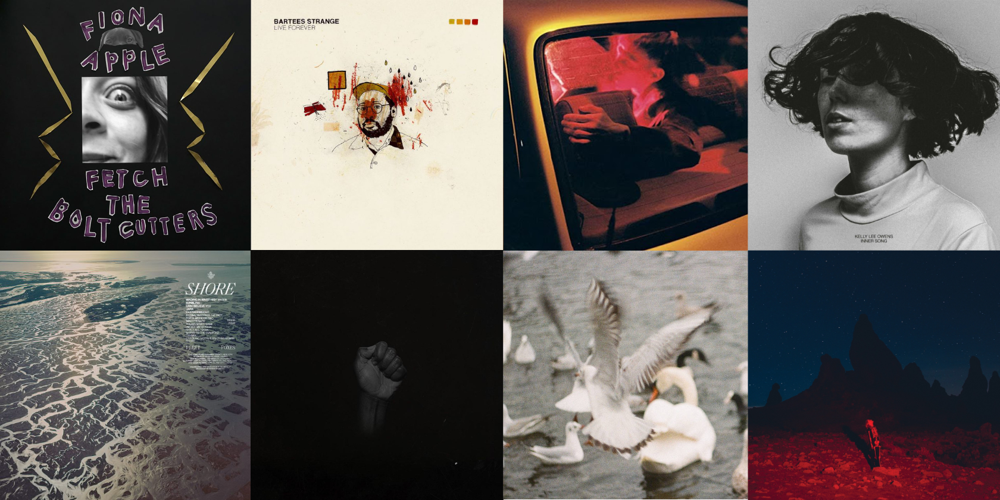
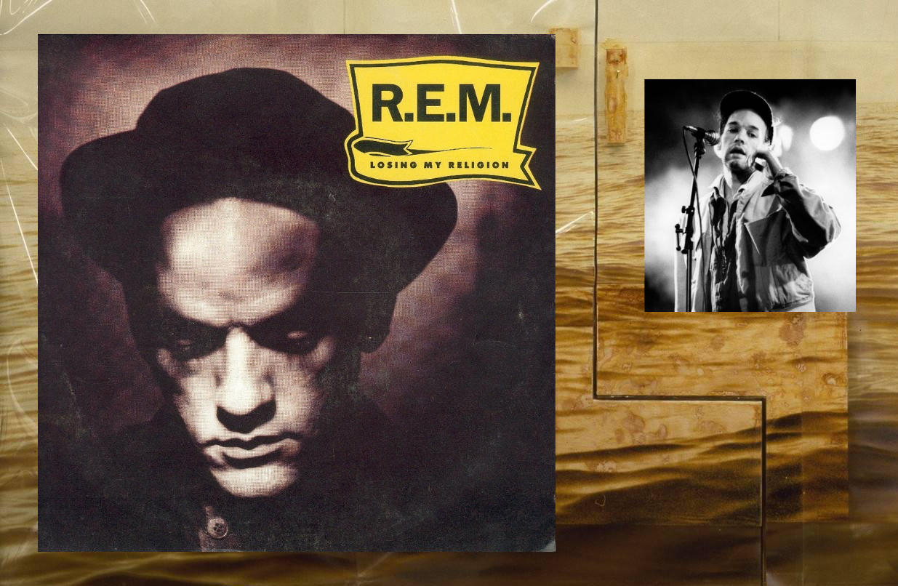
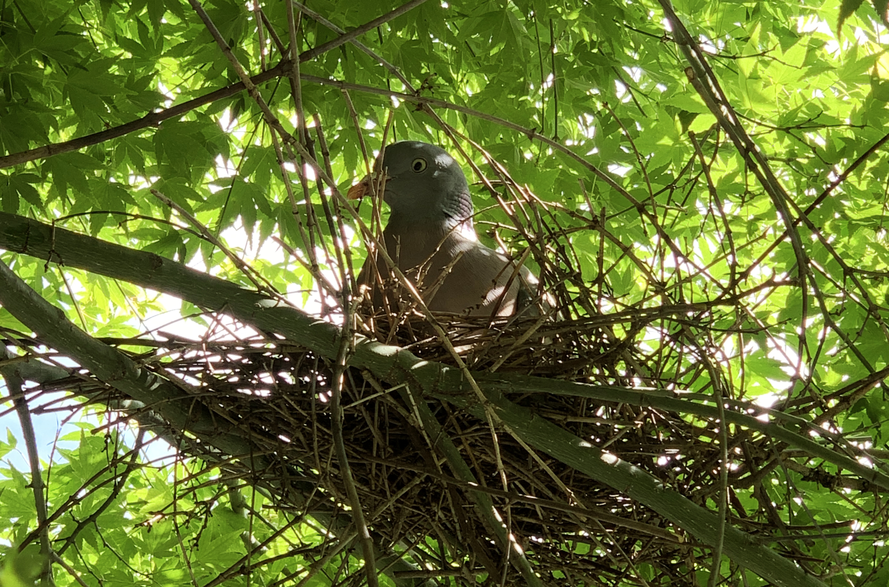
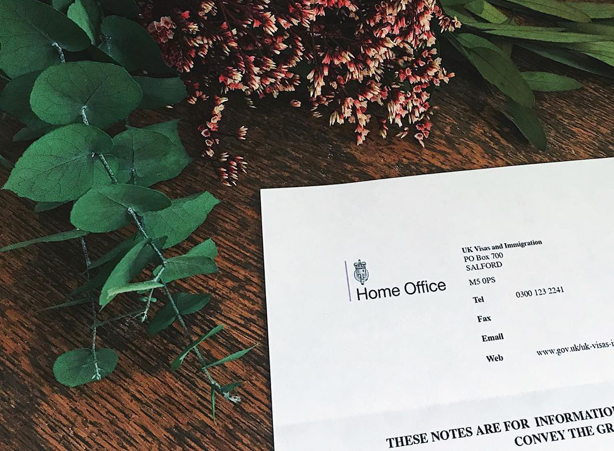

Hire me — Looking for an experienced web and product designer? I’m available →
Articles

6th December, 2021 / writing
Stream on
It’s two years since I started my Stream, a channel for quickfire posts alongside my more glacial blog, and I recently posted my 250th note. That’s 250 thoughts that would otherwise have gone undocumented or evaporated elsewhere.

27th November, 2021 / music
Sleaford Mods, Dry Cleaning, Billy Nomates
Our first show for almost two years; a big hometown arena gig for Nottingham’s finest, with support from spoken word indie darlings Dry Cleaning and the excellent Billy Nomates.

19th November, 2021 / books
Nina Simone’s Gum
Warren Ellis, most well-known for his partnership with Nick Cave, has written a unique and special book about the meaning we place on objects and experiences.

23rd August, 2021 / music
Leaving Spotify for Apple: a music obsessive’s observations
Fed up with Spotify’s UI tinkering, podcast peddling and attitude to artists, I spent the Summer with Apple Music and compiled a detailed list of pros and cons for both services.
21st July, 2021 / travel
Cornwall
We’re back from a few days exploring spectacular West Cornwall. It was our first time away for eighteen months, and we loved every minute.
16th March, 2021 / covid-19
One year
We were nervous by early Feb, and that last trip to London. I remember sanitising hands on the tube, and the quiet concern that overshadowed a birthday gathering.

31st December, 2020 / music
2020 in music
Weird year. Despite the virus, there was an overwhelming avalanche of new music. As the pandemic tore at the fabric of life, music was the balm that helped us cope with such an awful year.
16th December, 2020 / design
This used to be our playground
There was a time when owning digital space seemed thrilling, and our personal sites motivated us to express ourselves. There are signs of a resurgence, but too few wish to make their digital house a home.

13th October, 2020 / music
Losing My Religion
I shed a few tears while watching the Losing My Religion episode of Song Exploder. It’s such a celebrated pop song, you might wonder why I’d care so much about it.

1st October, 2020 / design
The power of emotional connection
At a time when some are expressing delight at the industrialisation of everything, revisiting Aarron Walter’s appreciation for thoughtful design on a human scale is heartening.
31st August, 2020 / film & tv
Dark: let there be light
I’ve finished my whirlwind journey through all twenty-six episodes of Dark, Netflix’s time-travelling, trinity-knotted, mythology-minded, multi-dimensional mindfuck. Spoilers ahead.
24th August, 2020 / music
Songs of protest: Victor Jara and my debt to the Manics
A new project from James Dean Bradfield pays tribute to the Chilean protest singer brutally murdered during Pinochet’s coup, and reminds me how much history I’ve learned from Bradfield’s band.

14th July, 2020 / nature
An unexpected appreciation for woodpigeons
I’ve long had a disdain for woodpigeons. I mean, has any bird thrived more in recent years than the woodpigeon? While other species cling to survival, these lumbering oafs are everywhere.

15th June, 2020 / politics
Indefinite leave to remain
After almost six years of marriage, three expensive and stressful visas, and much quiet worry, we finally have confirmation that Geri can stay as long as she wants.
2nd June, 2020 / race
A letter to my MP
On social media, I’m quiet but busy, reading and amplifying black voices. Still, I want to get my thoughts down. That’s mostly Stream notes, but today, I wrote to my MP.